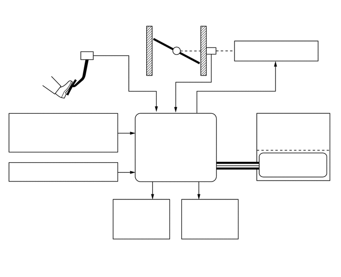

3.406,0.906 3.854,0.208
3.854,0.208 4.094,0.208
true
4.448,1.042 4.792,0.531
4.792,0.531 5.031,0.531
true
0.24,1.104 1.958,1.448
1.719,0.344
10
false
加速踏板传感器总成
0.469,2.427 2.115,2.823
1.646,0.396
10
false
质量空气流量计分总成
0.615,3.448 2.542,3.75
1.927,0.302
10
false
巡航控制开关*1
3.5,3 3.958,3.198
0.458,0.198
10
false
ECM
2.531,4.24 3.375,4.75
0.844,0.51
10
false
点火线圈总成
4.021,4.26 4.844,4.688
0.823,0.427
10
false
喷油器总成
5.125,0.885 6.531,1.208
1.406,0.323
10
false
节气门控制马达
5.583,2.469 6.927,2.844
1.344,0.375
10
false
制动执行器总成*2
5.771,3.281 6.917,3.625
1.146,0.344
10
false
防滑控制 ECU
4.635,3.594 5.167,3.979
0.531,0.385
10
false
CAN（V 总线）
4.135,0.135 6.281,0.333
2.146,0.198
10
false
节气门
0.115,5.438 2.51,5.667
2.396,0.229
10
false
*1：带巡航控制系统的车型
2.75,5.448 6.313,5.719
3.563,0.271
10
false
*2：带车辆稳定性控制 (VSC) 系统的车型
5.094,0.469 6.615,0.813
1.521,0.344
10
false
节气门位置传感器